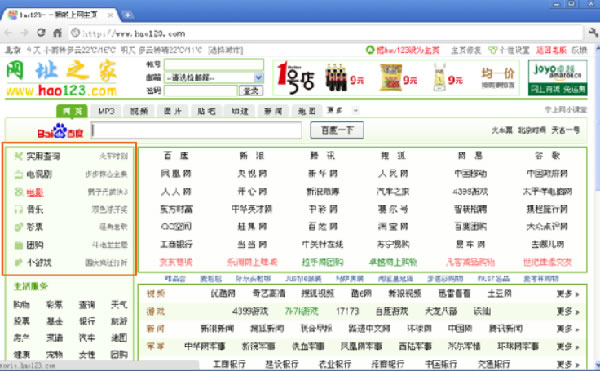

互联网神人之中国站长李兴平
他叫李兴平，网名为“黑苹果不亮”。如果当初不是把hao123卖给百度，大伙可能压根不知道这个人，他没学历、没钱、没背景，却用最简单的HTML语言缔造了两个商业传奇：一个是hao123，一个是4399。
早年经历
1979年，李兴平出生在广东兴宁，家里祖祖祖辈辈都是农民。15岁初二毕业后，李兴平就辍学了，蹲在地里帮父母干农活，他的皮肤被晒得黑不溜秋的。由于平时不怎么爱说话，见了熟人打个招呼都会脸红，所以村里人给他起的绰号叫“土豆”。
1999年互联网普及，兴宁网吧遍地开花，李兴平跟同学去过一次网吧就迷上了打网络游戏。家里没活的时候，他就拿着老妈给的四、五块零花钱，钻到网吧窝一天，在“三国”里杀个天昏地暗，不到半年，李兴平就成了“三国”里的骨灰级玩家。后来老妈听说他是玩游戏的败家子，就再也没有给过他零花钱。
为了能天天上网，李兴平就想去市里找一份网吧管理员的工作。不过好几个老板听说他没经验根本就不给机会。
有一次李兴平去一家网吧面试，店主玩游戏正在兴头上，李兴平就在一旁看，刚开始他不做声，后来看到店主就要被另外一个怪物打败了，他忍不住大喊“激活!激活!”“你是来面试网管?”李兴平点点头“行了，就你了。”
不过，做网管可不是打游戏。第一天上班，没有任何计算机维修基础的李兴平就傻了眼，死机、黑屏，李兴平吭哧瘪肚半天也没有把电脑修好，最后他突然想到可以到网上查资料，可算连蒙带唬过关。
此后，李兴平一有时间就泡在各种论坛上，两个月以后，他对于网络设置、电脑硬件等各种小问题已经了如指掌，并在网吧附近小有名气。慢慢的，每个月，他靠帮人维修电脑、组装电脑挣点零花钱。
组装电脑，要用网络来查询配件报价等一类信息，但是，浏览器一打开就是一片空白，只能一个字母一个字母地把网址敲进地址栏里，然后把网址保存在收藏夹。后来，收藏夹里的东西多了，混乱的字母就像无字天书，想找都难，李兴平感觉挺不方便。
不仅仅李兴平感觉不方便，在网吧上网的人也经常迷迷糊糊的。上网一个小时2块，大部分人不是记不住网址就是不会输网址，打字的时候用一个手指头在键盘上找来找去，一折腾一个小时过去了。
一些痞里痞气的小年轻就过来找李兴平的麻烦“什么破机器，给我免2块!”“别着急，别着急!”李兴平只能笑脸相迎，一方面请示老板免单，同时赶紧帮他们找网址。
好123来了
后来网吧的人习惯了，一有找不到的网址就找李兴平。刚开始，李兴平靠死记硬背，他把国内排名前5000的站点记得滚瓜烂熟。后来，李兴平一琢磨“能不能把大家常用的网址放到一个页面呢?那就方便多了。”
但是怎么把所有网址放在一个页面里呢?李兴平就上网一搜“要用HTML语言”，于是他去市里的图书馆查资料，编辑网页，测试，前前后后花了4个多月，终于在2000年5月，李兴平在网上建立了一个个人主页“黑苹果不亮”，他把大家常用的网站都搜集在一起，在个人主页和网站之间建立链接，想用哪个网站轻轻一点就能实现。
以后，网吧里谁有找不到的网址，李兴平就把自己的页面链接发给他。时间长了，越来越多的人都找李兴平要网址，“叫什么黑苹果不亮，你应该叫网址大全，你什么网站都知道!”网吧里的网友总是这样调侃，后来李兴平干脆就网站改成网址大全。
半年之后，来问网址大全的人越来越多，李兴平就问老板“能不能把网吧电脑都安装一份网址大全?”老板一看果然简单好用，于是第二天网吧电脑里都装上了网址大全。
结果，李兴平的网址大全吸引了越来越多的网民，两个月不到，隔壁网吧就光张了，老板一高兴给李兴平涨了300元工资。
半年之后，网址大全拥有了上千网址。后来，李兴平就决定打造一个方便网友上网的网站导航。叫什么名字呢?李兴平印象比较深的是雅虎的126，他脑子里灵光一现，就给网址起了个不能再简单的名字—hao123。
李兴平开始为网站做详细的归类整理，比如说查询栏目，在首页能看到这两个字，但是点进去就是别样洞天，什么天气查询、邮政编码查询、手机号码查询、在线地图等等应有尽有。
好123的优势
1999年，我国互联网处于爆炸式发展，李兴平的hao123正好满足了一大批菜鸟的需求，流量每个月保持在100%以上的增加。有一天李兴平的朋友对他说：“你知道hao123网站吗?我妈妈都在用。”李兴平不置可否。因为李兴平没有觉得有什么了不起，hao123也挣不到钱，能够养活他的还是要靠做网吧管理员。
直到2000年6月，一个听歌网站的负责人给李兴平发邮件，希望在hao123页面挂上自己网站的关键词，每个月支付500元的费用。“还有主动送上门的钱?”李兴平觉得天上开始掉馅饼。随后每个月几千元、几万元的广告业务开始源源不断。3721、易趣、263、Tom等先后和hao123建立了合作关系。
那时候hao123基本没有竞争对手，一直处于导航网站第一，这让搞域名的蔡文胜十分眼馋，蔡文胜问手下：“我花100万给把hao123买下来怎么样?”手下说：“这网站还用花钱买，我分分钟就能搞出来一个”。一个月后，蔡文胜的265就诞生了，不过始终干不过hao123。
为什么?因为hao123“简单到无法超越。”李兴平的网站确实简单，就是一些链接的堆积，没有什么技术性，他也不懂什么营销的套路，任何一个程序员都能轻松复制，但是hao123占据了先发优势，已经形成规模，口碑无法复制。
2004年后，我国互联网用户逐渐从一线城市向二三线城市蔓延，李兴平一个人创造的hao123网站流量就超过sina与163的3000人创造的流量总和。在全球权威的Alexa网络监测中，hao123是全球流量极大的中文网站之一，许多网吧电脑和PC的开机首页就是Hao123.com。
这时，美国的IDG向李兴平伸出了橄榄枝“开价1000万!”值这么多钱?李兴平有点吓着了，他上网一查IDG“乖乖，全是英文的”，他半个字都看不懂，算了，事情就这么给耽搁下来了。
到了2005年，Hao123已经每个月给带给李兴平近十万的收入。不过天下没有免费的午餐，一些商业网站隔三差五就给李兴平施压“网站流量怎么这么少?拿了我的钱不办事啊?”
要知道，5000个网站!就李兴平一个人，他因此非常忙碌，一天大概有6-7个小时在检查、更新链接。李兴平睡觉的时候都在担心网站里会不会有一些非法链接“hao123今后的路该怎么走?”
与百度合作
就在那时，百度向李兴平提出了收购的请求，并派出了百度深圳分公司的刘计平去到兴宁。
平价运动鞋、皱巴巴的上衣，分明就是路人甲、乙丙、丁，哪里是每个月收入几万人的人?“我也做过公司，知道有多难，网站的推广合作、税务工商，什么事不得亲历亲为，我们的收购是真心希望把hao123发展壮大，就靠你一个人去运作，真的会限制Hao123.com的发展。”刘计平句句话直戳李兴平的心窝。
“我也在思考hao123今后的发展，我只是一个骨灰级的网虫，对于外面的事务根本不会，只在网上才有如鱼得水的感觉。”李兴平动摇了。最终百度以5000万成功收购Hao123，并许诺百度上市后给李兴平一部分股份。
传言百度收购hao123之后，流量却出现了严重的下滑。没有办法李彦宏只能再请教李兴平，以至于后来无论hao123要做什么调整都会和李兴平沟通。
此后，Hao123每年为百度贡献4亿以上的营收，为百度上市打通了资金通道。2005年8月5日，百度在美国成功上市。凌晨两点，李兴平给刘计平打了电话“现在是什么心情?股票怎么卖?”问得李兴平很蒙，因为他也不知道百度上市对于他来说意味着什么。
因为，李兴平没有闲心想这些，他已经不做网络管理员了，但是还是一门心思想搞网站开发。
4399诞生
百度上市以后，李兴平很无聊，他去网吧连续玩了几天游戏，想找找当年的感觉。李兴平突然发现网吧里玩游戏的娃娃越来越多，个个都是小白，大部分都是玩得类似于偷菜的游戏，他突然一震“为什么不开发一个游戏大全?”就这样，李兴平沿袭了hao123的风格，没几天游戏大全就诞生了，它的名字比hao123还简单，叫4399。
唯一的遗憾就是4399虽然流量大，但是广告带来的收益并不理想。这时候蔡文胜出现了。
与蔡文胜相见恨晚
2006年，百度和谷歌开始流量大战，百度逐步把流量收紧，运营商的流量急剧下滑，蔡文胜一看情况不妙卖掉了手里的265，拿钱做起了天使投资。当时中国的魔兽发展一片光明，很多网游公司都上市了，蔡文胜也看上了这个市场，他又一次锁定了李兴平的4399。
上次与hao123擦肩而过，这次蔡文胜可谓有备而来。二人都是站长，自然有很多的共同语言，颇有一种相见恨晚的感觉。见面后蔡文胜开门见山“我们合作能做出全国最好的页面游戏，最大的游戏平台，什么7k7k都不是我们的对手。”一句话戳中了李兴平的痛点。
新闻一出就在网络上炸了锅。李兴平旗下的4399.com在chinarank排名59;蔡文胜，同行眼里的“域名投资获利大王”和“站长天使投资大王”，二人宣布合作，让搞互联网的人夜不能寐。
蔡文胜用自己之前的公司在广州完成注册，更名为厦门游家。蔡文胜持股67%，李兴平和骆海坚各占15%，之前公司的自然人占3%。李兴平主要负责公司游戏的运营工作。
凭借之前运营游戏的经验，李兴平感觉“游戏要想出彩，就一个字快”。于是半年时间，《热血三国》上线了，每个月带来50万元的收入。随后《英雄之门》、《三国风云》屡试不爽。
后来，蔡文胜和李兴平琢磨自己开发游戏。蔡文胜组建了一个游戏团队，李兴平就直接搬进了公司，不分白天黑夜地搞测试。蔡文胜说：“这款游戏不火，都对不起老李。”一年以后《神魔遮天》横空出世，据统计每个月有2000万的流水。这一年，4399营收达10亿，每天最高访问量达1800万，成为全国最大的小游戏网站。
2011年到2013年，4399的业绩一直处于上升状态，三年的净利润分别达到1.16亿元、2.33亿元、2.49亿元。非常遗憾的是，由于七七八八的原因，4399上市过程中出了很多岔子，至今都没没能成功。
李兴平从一个一无所知的初中生，到hao123和4399两大平台的行业第一，“中国第一站长”实至名归。
来源：《21世纪商业评论》